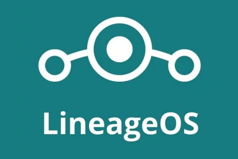
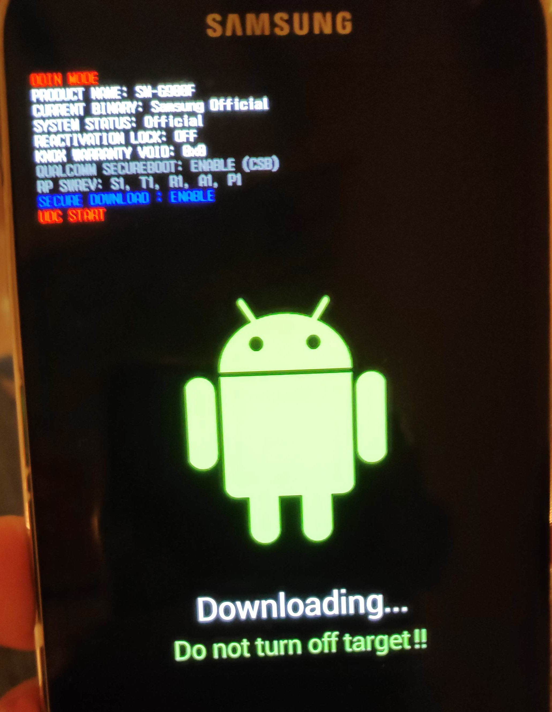
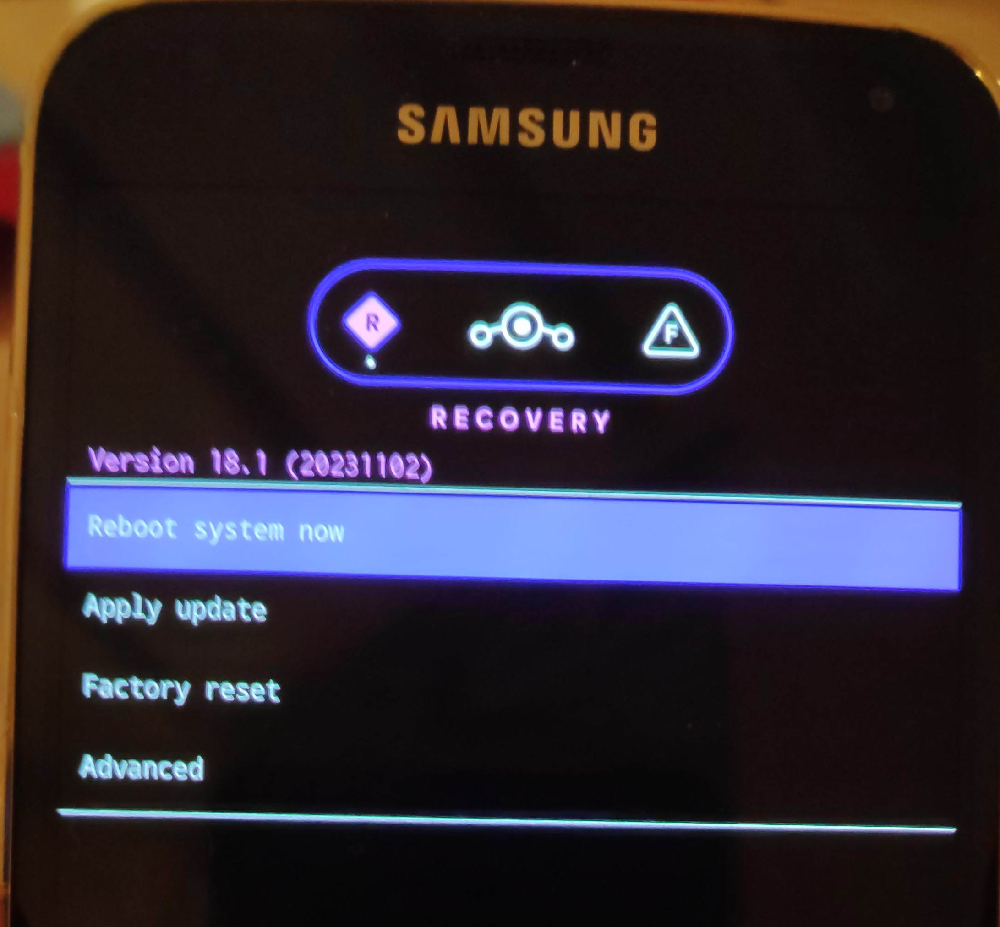
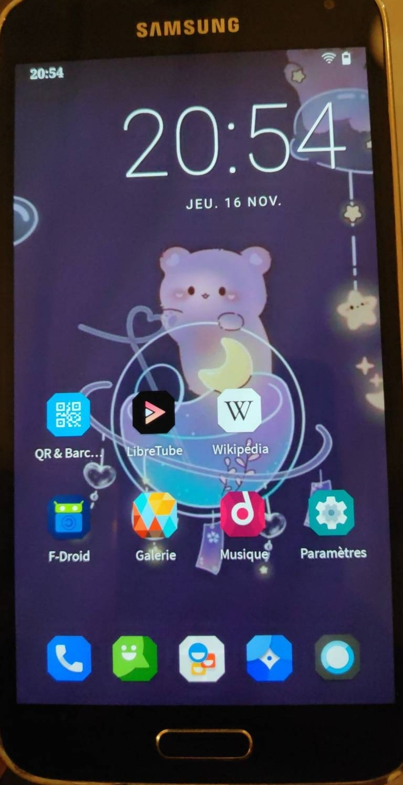

Bought a Samsung S5 in October 2014. It’d served me well for 4 years and since was lying in a drawer. Now the next and current smartphone is 5 years old and show some issues. Nothing dramatic but one is annoying, it is not receiving updates, especially security ones for 3 years now. I don’t have much knowledge about the consequences but clearly it is not great. Thus, here are four motivations for installing an open-source OS on a phone:
- Test the feasibility of having a non proprietary Android (apps outside )
- Get updated Android
- Get away from
- Learn new stuffs as I have never done anything with Android OS
Current Android and state
The phone was as expected at 0% battery. Stayed turn off for 5 years. After charging it for a few moments it booted nicely, everything seems to work. Android version was 6.01
LineageOS
I know nothing about alternative Android OS. I show someone on Mastodon installing LineageOS so I went for this one.

Luckily, the S5 is a supported devices and I am supposed to install klte Lineage version 18.1. I followed the steps and of course it went wrong, I assumed the Odin step was optional. It is not.
Workflow
The recovery mode is protected. If we reboot in this mode, it is to recover the Samsung Android OS. Did not understand that the Odin step was about erasing this by the Lineage recovery image. That explained the different images available for klte.
- Setup the laptop with the necessary tools:
adbandroid developmentodin, the worked nicely, not true we need the official software
- Reboot the phone in download mode
- Install the lineage recovery image
- Reboot quicky in recovery mode (otherwise Samsung erases step 3., happened twice….)
- Sideload the lineage OS (previously converted from
.img->.tar) - Reboot, LneageOs get installed.
I tried the install of with MindTheGaps but it failed and turned out it is available anyway. Well I don’t know what happened here.
Let’s see in details the different steps
Mandatory software
The instructions are available here.
On Arch what was needed:
yay odin4-cli android-sdk-platform-toolsOf note, android-sdk-platform-tools provides both adb and fastboot but there are located in /opt/android-sdk/platform-tools/. I created symbolic links for both tools in ~/bin/
Then I followed the instructions for setting adb
To use adb with your device, you’ll need to enable developer options and USB debugging:
- Open Settings, and select “About”.
- Tap on “Build number” seven times.
- Go back, and select “Developer options”.
- Scroll down, and check the “Android debugging” or “USB debugging” entry under “Debugging”.
- Plug your device into your computer.
- On the computer, open up a terminal/command prompt and type
adb devices. - A dialog should show on your device, asking you to allow usb debugging. Check “always allow”, and choose OK
I did not remember doing the step 7. Worked anyway.
Download images
Following instructions, images are there.
I downloaded
lineage-18.1-20231102-nightly-klte-signed.ziprecovery.img
and check their sha256sums.
The recovery image is the first one needed, but the tar version. To convert img to tar:
tar --format=ustar -cvf recovery.tar recovery.imgInstall the custom recovery mode
Plug in the phone in your laptop and be sure that adb devices returns a number. Otherwise, it means that the USB debugging is not enabled on the phone.
I first missed this part. The factory recovery mode will not allow you to install anything. You must complete this step AND prevent the rebooting that re-install the factory one.
This implied rebooting in download mode, can be done with either Volume down + Home + Power or
adb reboot downloadThen once ready, to install the custom recovery from Lineage
odin4 must be executed as root, took me too much yime to figure this out.
sudo odin4 -a recovery.tarThe screen looks like this:

When it is done, I removed the battery, unplugged the phone to be sure it does not erase this custom recovery.
Now boot into this custom recovery mode. With the device powered off, hold Volume Up + Home + Power. When the blue text appears, release the buttons.
It must look like this, with the Lineage OS logo:

Upload the Lineage OS image
On your laptop, upload aka sideload the image, go to Apply Update
and on the laptop type:
adb sideload lineage-18.1-20231102-nightly-klte-signed.zipOnce done, navigate on the phone to Reboot system now and the new OS is being installed after the reboot, it should last less than 15 minutes (took not even 5 for me).
Screenshot
After installing F-droid and some apps, everything works great and the phone is still very responsive! Android version went from 6.01 to 11.0.

Edit 2024-02-03: The Screen Curtain drama
My daughter is using this S5 happily for 2 months now. No email account, no google apps but F-droid is great. Then today, she played with many options as usual when in the screen accessibility, she activated the screen curtain. Meant for blind people to preserve their privacy, the whole screen turns totally black once you enter your PIN. Going on the Internet, the best thread was on reddit. I tried the scrcpy (which is a great software!), the adb shell but all those solutions involved the USB debugging on that was not anymore the case. The only bit that work was scrcpy --otg but I did not get what was needed to navigate, or to send relevant characters. So in end, I rebooted in the recovery mode (Vol Up + Home + Power). adb shell worked, I was able to enable it but, even mounting in /mnt/system the data/ folder was empty. Thus, I wiped out the partition and sideloaded LineageOS again:
lineage-18.1-20240201-nightly-klte-signed.zip
And we are able to use the phone again. All custom / app / pictures gone but she will remember this lesson apparently.